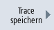

Sie haben zwei Möglichkeiten eine Trace-Sitzung zu speichern:
-
Variablen und Einstellungen: Es werden nur die Variablen und die Einstellungen dazu gespeichert.
-
Variablen, Einstellungen und aufgezeichnete Werte: Es werden die Variablen, die Einstellungen sowie die aufgezeichneten Werte gespeichert.
|
Hinweis
|
Speicheroption
Wenn Sie unter "Trace" → "Optionen" das Kontrollkästchen "Datei in beiden Formaten speichern" aktiviert haben, wird die Sitzungsdatei zusätzlich zum xml-Format auch als csv-Datei gespeichert.
|
Vorgehensweise
 | 1. | Sie haben eine aktive Trace-Sitzung bearbeitet. |
|  | 2. | Drücken Sie den Softkey "Trace speichern". Das Fenster "Trace speichern: Session..." wird geöffnet und bietet die Speichermöglichkeiten an. |
 | 3. | Aktivieren Sie das entsprechende Kontrollkästchen und drücken Sie den Softkey "OK". Das Fenster "Trace speichern" öffnet sich und gibt im Eingabefeld von "Name der Trace-Datei" den Dateinamen an. Das Dateiformat wird als ".xml" automatisch vorgegeben und kann nicht verändert werden. |
| | 4. | Drücken Sie den Softkey "OK", um die Sitzungsdatei zu speichern. Wenn die Sitzungsdatei bereits vorhanden ist, erhalten Sie eine entsprechende Sicherheitsabfrage. |
| | 5. | Drücken Sie den Softkey "OK" erneut, wenn Sie die vorhandene Sitzungsdatei überschreiben möchten. |
| | | - ODER - |
| | | Drücken Sie den Softkey "Sichern unter", wenn Sie die vorhandene Sitzungsdatei nicht überschreiben möchten. Es wird Ihnen ein neuer Name vorgeschlagen bzw. Sie können einen eigenen Namen vergeben. |
| | | - ODER - |
| | | Drücken Sie den Softkey "Verzeich. wechseln", wenn Sie die Sitzungsdatei in einem anderen Verzeichnis als im Standard-Verzeichnis "Trace" speichern möchten. Der Datenbaum öffnet sich und Sie können zwischen den konfigurierten Laufwerken auswählen. |
| | | Drücken Sie den Softkey "Neues Verzeichnis", wenn Sie ein neues Verzeichnis anlegen. Das Fenster "Neues Verzeichnis" öffnet sich und Sie können einen Verzeichnisnamen vergeben. |
| | | Drücken Sie den Softkey "OK. Das Fenster "Trace speichern" öffnet sich und Sie erhalten die Namen von Zielverzeichnis und Sitzungsdatei angezeigt. Den Namen der Sitzungsdatei können Sie ändern. |
| | 6. | Drücken Sie den Softkey "OK" ein weiteres Mal, um die Sitzungsdatei zu speichern. |
| | | - ODER - |
| | | Wenn bereits eine Sitzungsdatei mit diesem Namen vorhanden ist, erhalten Sie eine entsprechende Sicherheitsabfrage. |